Reverse Engineering
Reverse engineering allows you to analyze and understand existing systems or components, often to facilitate maintenance, improvement, or integration.
Create New Project Dialog
The first screen allows users to define the basic project information.
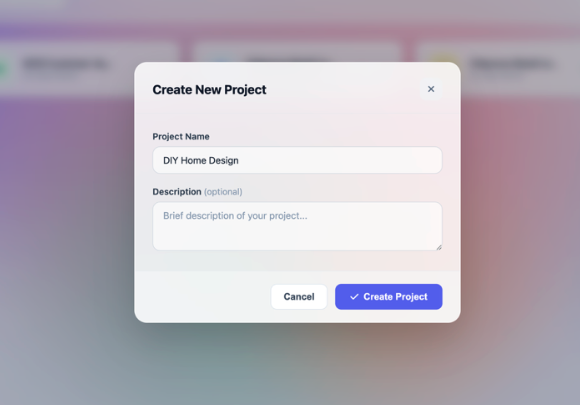
Components
Project Name Field
Enter the name of the project to be created.
Example
Midlands Clinic Appointment System
This name will be used throughout the platform to identify the project.
Description Field
Provides an optional summary or overview of the project.
Users may include:
- Project purpose
- Business objectives
- System overview
- Functional scope
Example
Clinic appointment and patient scheduling platform.
Cancel Button
Closes the dialog without creating a project.
Create Project Button
Creates the new project and proceeds to the next setup step.
Create Project Options
After creating the project, the system prompts the user to choose how the project source code will be initialized.
Two options are available: (1) Start from Scratch and (2) Import Existing Project
First Option - Start from Scratch
Creates a new project environment using the selected setup options.
Procedure
- Click Start from Scratch
- The system prepares a new project structure
Recommended For
- New projects
- Fresh project setup
- Greenfield projects
- Standard project configuration
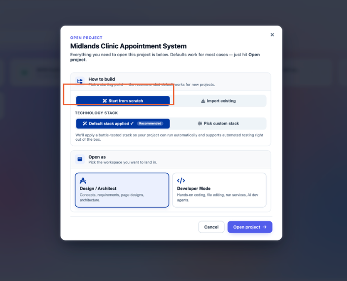
Technology Stack
This section allows users to define the technologies and framework setup for the project.
Default Stack Applied
Automatically applies the platform’s recommended technology setup.
Features
- Pre-configured environment
- Optimized project setup
- Automated testing support
Procedure
- Keep Default Stack Applied selected
- Optimized project setup
- The system automatically configures the recommended technologies
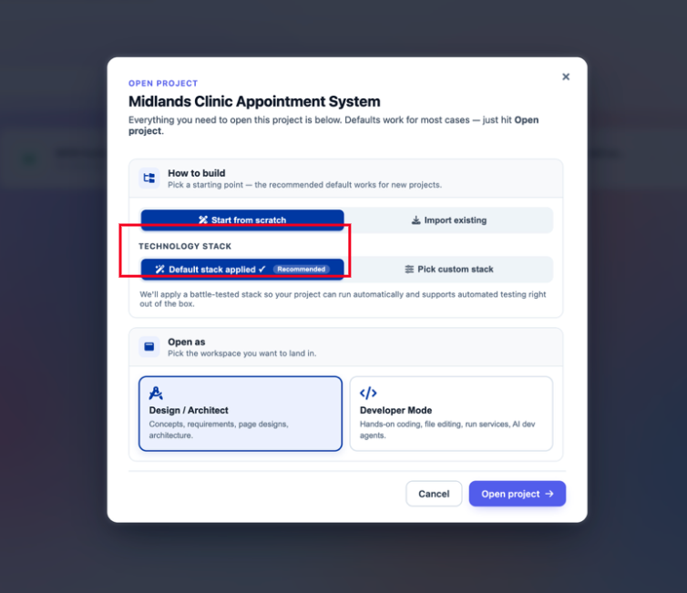
Pick Custom Stack
Allows users to manually choose preferred technologies and frameworks.
Procedure
- Click Pick Custom Stack
- Select the desired technologies
- Save the selected configuration
Recommended For
- Custom project requirements
- Advanced configurations
- Specific framework preferences User
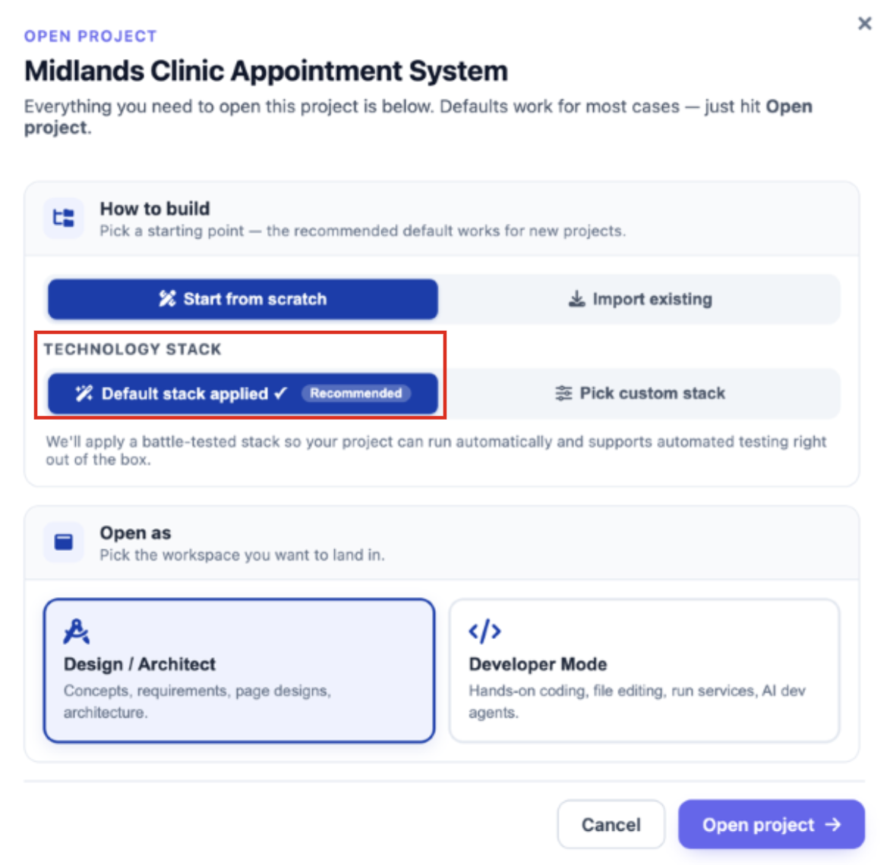
A dialog box is launched with Technology stack options to be applied on the project to be created. This is divided into 3 sections: (1) Backend, (2) Database and (3) UI/Frontend
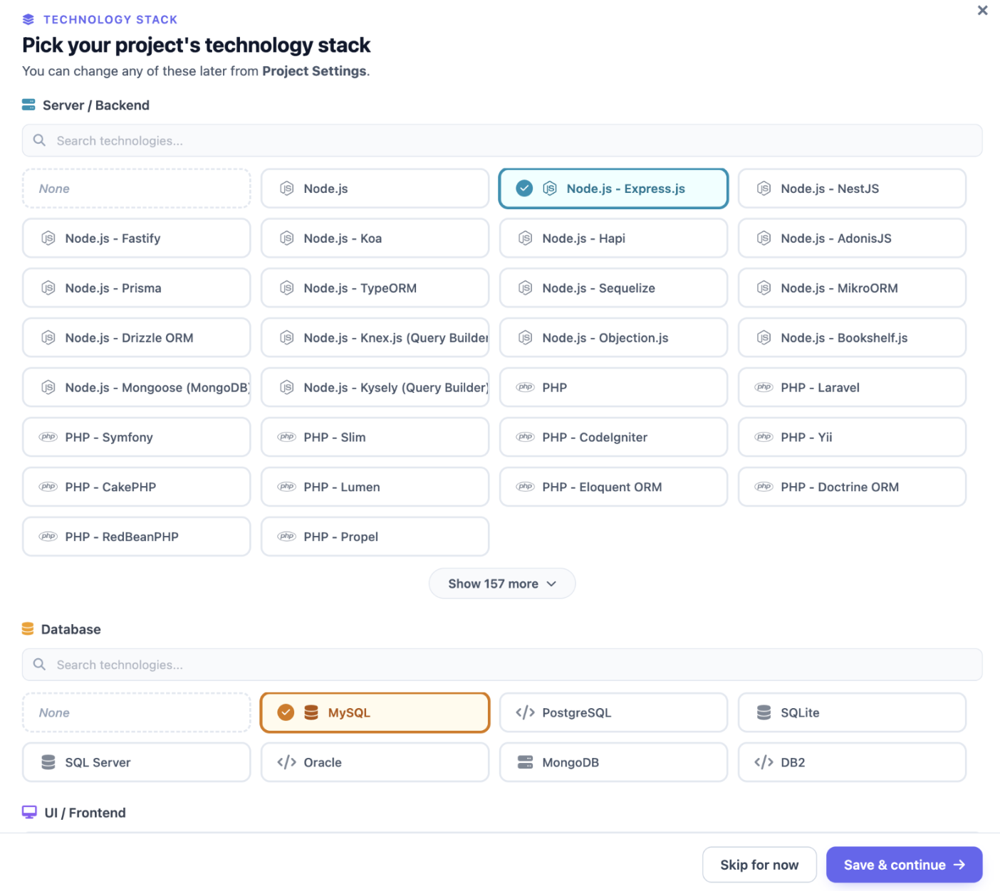
Server/Backend
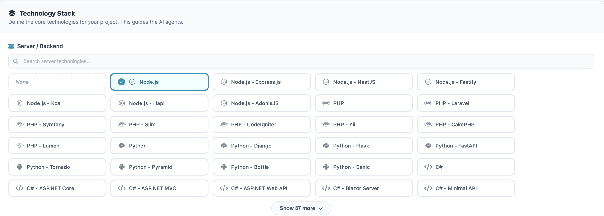
Select the primary language and framework that will power your application logic. The system supports a wide array of environments, including:
- JavaScript/TypeScript:Node.js (Express, NestJS, Fastify, Koa, Hapi, AdonisJS).
- Python:Django, Flask, FastAPI, Tornado, Pyramid, Bottle, Sanic.
- PHPLaravel, Symfony, Slim, CodeIgniter, Yii, CakePHP, Lumen.
- C#:ASP.NET Core, ASP.NET MVC, Web API, Blazor, Minimal API.
Database
Identify the data persistence layer for your project. This selection informs how Data Objects and Database Schemas are visualized and scripted (e.g., SQL-based relational models vs. NoSQL document structures).
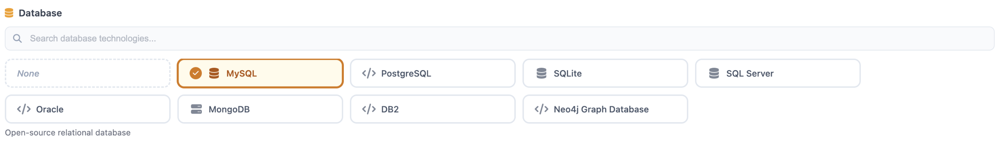
UI / Frontend Configuration
The UI/Frontend section is dedicated to defining the "Client Side" of your application. This configuration ensures that the AI-generated user interfaces, component libraries, and frontend logic are consistent with modern web or mobile standards.
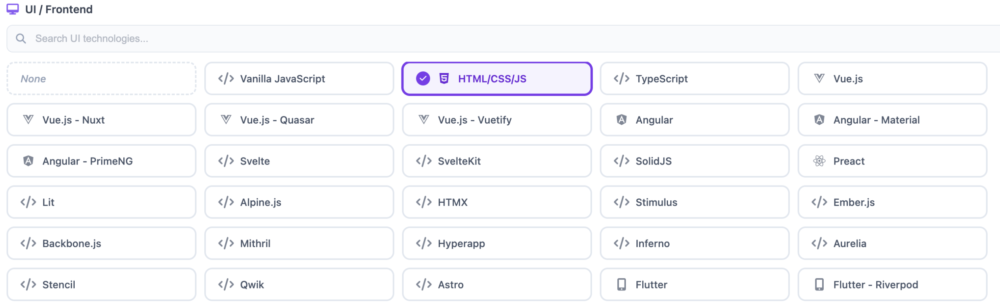
Implementation Best Practices
To ensure the highest accuracy in your project outputs, follow these guidelines:
- Precision Matters: Selecting a specific framework (like Node.js - NestJS) rather than a generic runtime (like Node.js) allows the system to generate more precise boilerplate code and folder structures.
- Save Changes: Always click the Save Changes button in the top-right corner before navigating to other sections like API Keys or Business Flows to avoid losing your configuration.
- Iterative Updates: You can return to this section at any time to update your stack if your project requirements pivot during the ideation phase.
Second Option - Import an Existing Project
Imports an existing application or codebase into the platform.
Supported Sources
- Version control repositories
- Public GitHub repositories
- ZIP archive files
Recommended For
- Existing applications
- Legacy systems
- Ongoing development projects
- Previously developed source code
Action
Click Choose Source to continue to the import options screen.
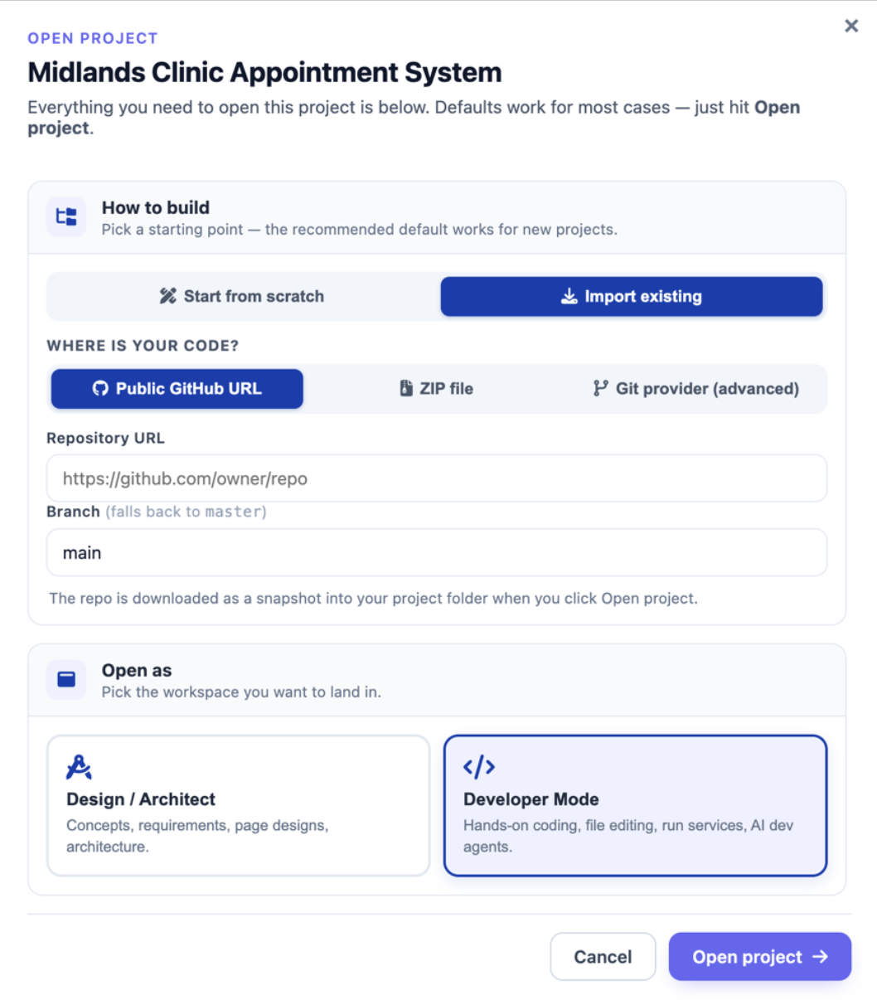
Where is your Source Code
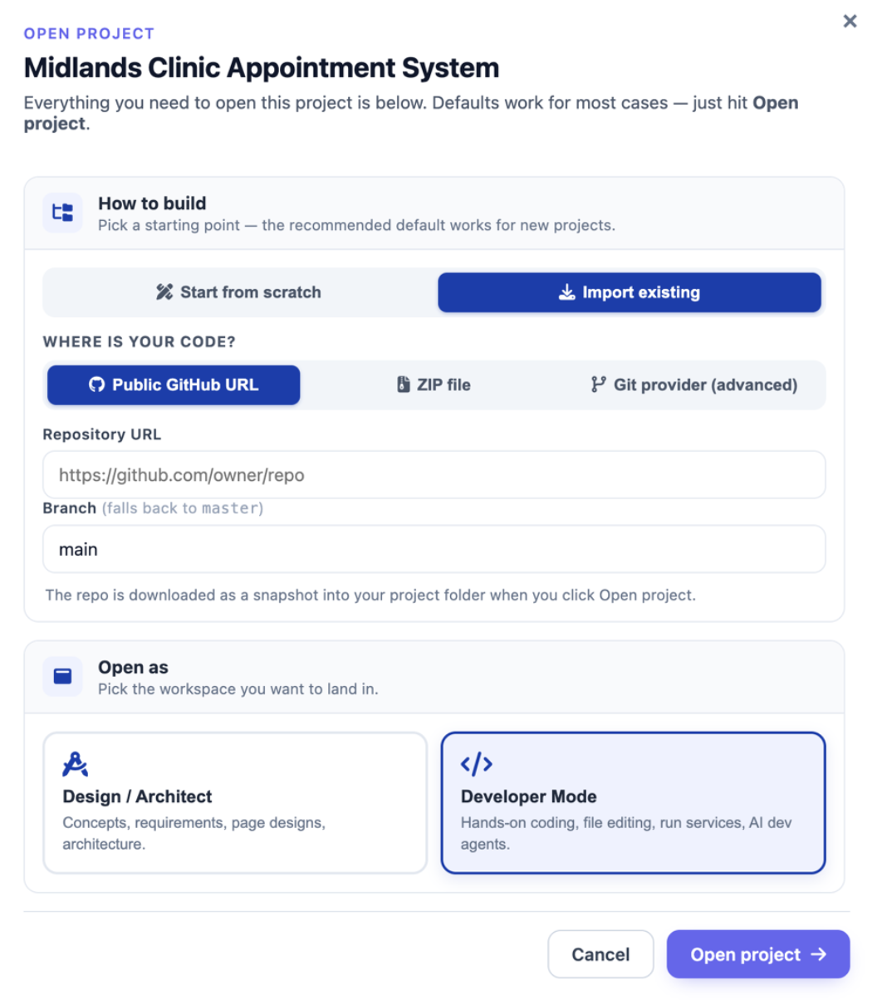
Customer can import projects from 3 options:
- Public GitHub URL
- ZIP File
- Git Provider (advanced)
This page is typically accessed when creating a new project or adding source code to an existing workspace.
These options allow customers to:
- Integrate existing applications into the platform
- Continue development from external repositories
- Upload archived project files
- Synchronize source code with version control systems
Option 1 - Public GitHub URL
Importing Source Code via Public GitHub URL
When you choose to seed an empty workspace using an existing project repository, the platform provides a dedicated wizard to pull code seamlessly from open-source version control.
This option imports source code from a publicly accessible GitHub repository.
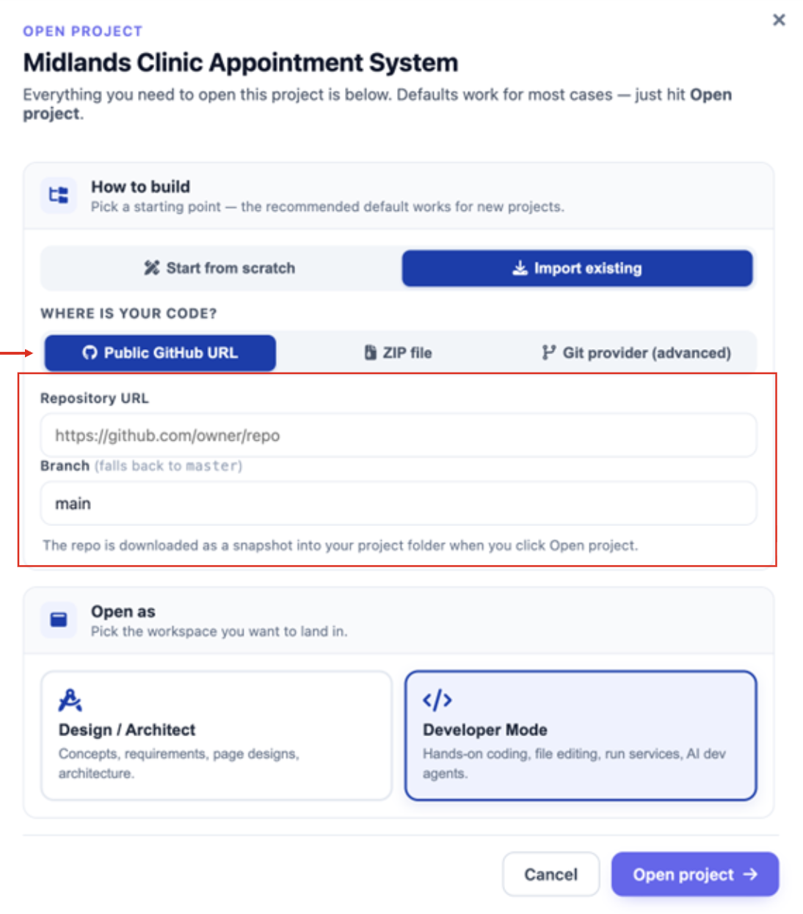
Functions
- Download project snapshots
- Clone public repositories
- Import application source files into the workspace
User Requirement
The user must provide a valid public GitHub repository URL.
Parameter Configurations & Rules
- Repository URL: Paste the complete, publicly accessible HTTP link to your target repository (e.g., https://github.com/expressjs/express). Private repositories requiring SSH key encryption or explicit developer tokens are not supported by this basic link wizard.
- Branch Specification: Define the explicit branch string you want to target (e.g., main or development). If you leave this field empty, or if the specified branch cannot be found in the repository index, the system automatically falls back to pulling from the default master branch.
Executing the Repository Sync
- Enter your specific repository location and target branch into the modal text blocks.
- Click the white ← Back button to return to the source selection menu if you need to choose an alternative upload path (like a local ZIP archive).
- Click the solid purple 📥 Import repository action button to start the automated transfer.
- The platform will automatically connect to GitHub, download a snapshot of the codebase, extract the file structure, and initialize the project components directly within your working developer canvas.
Option 2 - ZIP File
Importing Source Code via ZIP Archive
When setting up a project workspace from an existing codebase, the platform provides a local file upload wizard as an alternative to external version control tracking.
This option allows you to upload a compressed archive directly from your local computer. The system will automatically unpack and map the contained directories into your designated project folder.
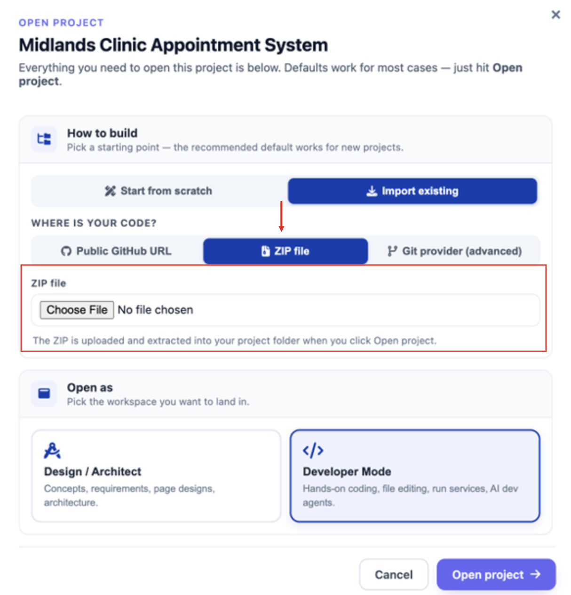
Features:
- Upload local project archives
- Extract application files automatically
- Import existing codebases into the workspace
Supported Content
ZIP files containing:
- Source code
- Assets
- Configuration files
- Project folders
Core Functions
- Upload Local Project Archives: Browse your local directories to select and transmit bundled application code structures.
- Extract Application Files Automatically: The backend system instantly runs an unzipping routine upon completing the upload, parsing your file trees without requiring manual terminal extraction commands.
- Import Existing Codebases into the Workspace: Populates your empty developer environment with your historical logic blocks, configuration settings, and static assets in one step.
Step-by-Step Upload Procedure
- Click the Choose File target button within the configuration modal to trigger your operating system's native file explorer.
- Locate and select the targeted .zip archive containing your application files.
- Verify that the correct archive filename appears next to the selection button.
- If you need to switch to an alternative seed method (such as pulling from a public GitHub URL), click the white ← Back button.
- Click the solid purple 📤 Upload & Extract action button to initiate the transfer process.
- Keep your browser window open while the file is processed; once complete, your unpacked folder architecture will populate directly into the left side of your developer canvas.
Option 3 – Git Provider (advanced)
The Git Provider (Advanced) option allows users to connect the project directly to a remote Version Control System (VCS) repository such as GitHub, GitLab, or Bitbucket using authenticated credentials.
This option is recommended for projects that are actively maintained in a source control repository and require secure access.
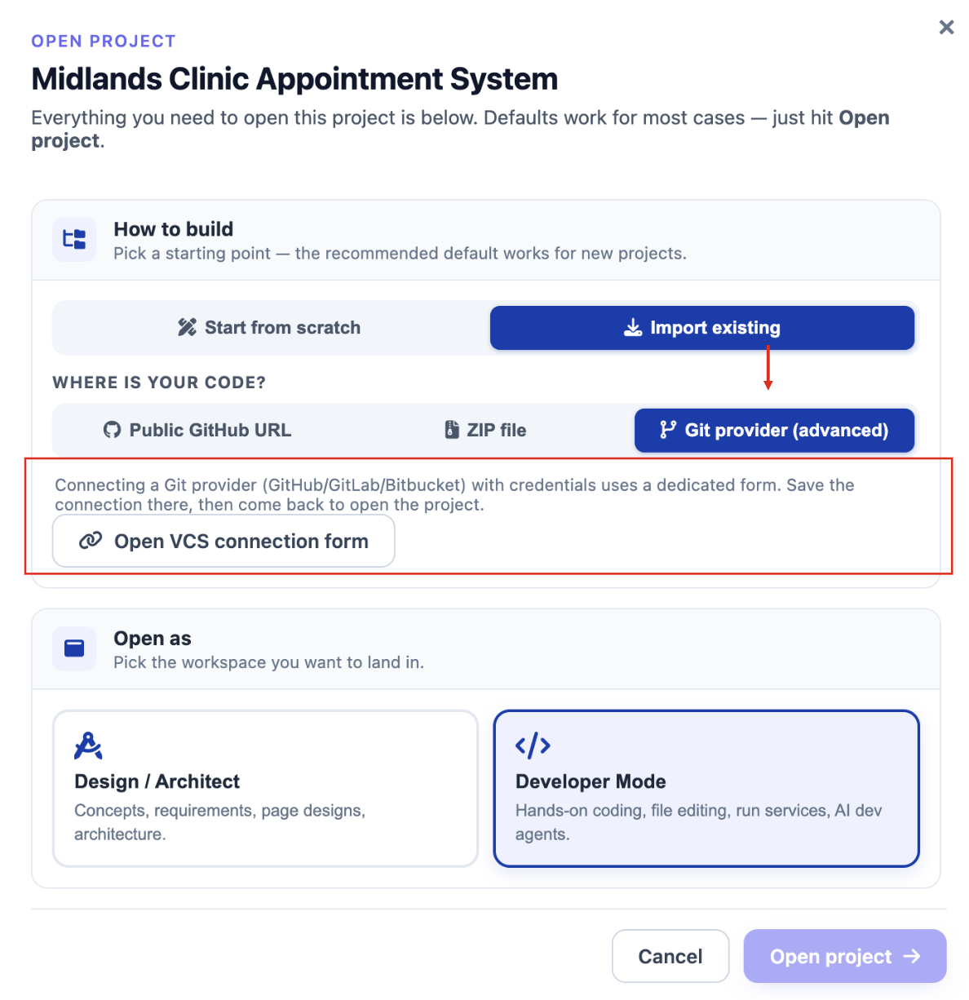
What is a VCS?
VCS stands for Version Control System.
A Version Control System is a tool used to:
- Store and manage source code
- Track file and code changes over time
- Support collaboration between multiple developers
- Maintain version history and backups
- Restore previous versions when needed
Common VCS platforms include:
- GitHub
- GitLab
- Bitbucket
How to Connect Project using VCS:
- Select Connect my version control.
- Authenticate with the repository provider.
- Select the repository to import.
- Confirm synchronization settings by clicking on Save Integrations.
Components
Project Folder
Displays the target project workspace where the repository will be connected.
Purpose
Determines which local project folder will synchronize with the Git repository.
Example
midlands_clinic_appointment_system
System Type
Specifies the version control system type.
Supported Example
- Git
Purpose
Defines the repository protocol and integration type.
Integration Name
Allows users to assign a custom name for the repository connection.
Example
Main Repository
Purpose
Helps identify repository integrations within the platform.
Default Branch
Specifies the primary branch that the workspace will synchronize with.
Example
Smain
Common Branch Names
- main
- master
- develop
Repository URL
Field used to enter the Git repository address.
Example
https://github.com/username/repo.git
Purpose
Identifies the remote repository to connect and synchronize with.
Authentication Method
Specifies how the system authenticates with the repository provider.
Example
Access token
Supported Authentication Types
May include:
- Access Token
- SSH Key
- Username and Password
- OAuth Authentication
Personal Access Token
Secure field used to enter the repository access token.
Purpose
Provides secure authentication for:
- Pull operations
- Push operations
- Repository synchronization
Access tokens should be kept confidential and securely managed.
Enable Auto-Sync
Checkbox option that automatically synchronizes repository updates.
Functions
- Automatically pull repository changes
- Keep workspace updated
- Simplify collaboration workflows
Back Button
Returns the user to the previous setup screen without saving changes.
Save Integration Button
Saves the repository configuration and establishes the connection.
Notes and Recommendations
Saves the repository configuration and establishes the connection.
- Ensure the repository URL is valid and accessible.
- Verify that the access token has sufficient permissions.
- Use auto-sync for active collaborative development projects.
- Protect access tokens and avoid sharing credentials publicly.
- Confirm the correct default branch before saving the integration.
OPEN PROJECT
Midlands Clinic Appointment System
Pick how you want to work on this project. Same data, same files — different interface.
Design / Architect
Concepts, requirements, page designs, architecture. The high-level view.
OpenDeveloper Mode
Hands-on coding, file editing, run services, AI dev agents.
OpenSame project, same database — just a different workspace.